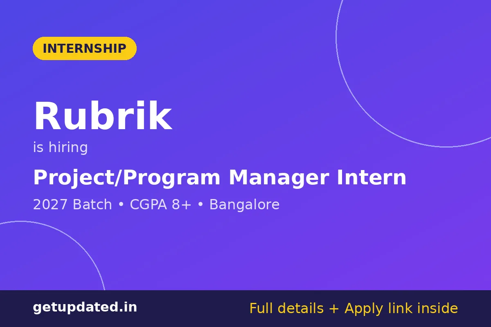

State Street is hiring B.Tech graduates for its Technology Early Career Entry Program in Bangalore (Hyderabad is also listed). It is a full-time internship with State Street Technology Services, built to develop recent graduates into future technology experts and leaders. The official Workday posting is open until 30 November 2026.
The role mixes software development, DevOps, cloud, automation and production support. That makes it a useful first job for freshers who want exposure beyond plain coding. This guide covers what the official posting says, who should apply, and how to prepare.
Today is 22 November 2026, so only a few days remain. Read the details below and apply through the official link in the Official Links section.
Table of Contents
- Quick Highlights
- About State Street
- Program Overview
- Responsibilities
- What You Will Learn
- Eligibility Criteria
- Skills State Street Values
- Salary and Stipend
- Selection Process
- How to Apply
- Preparation Plan
- Common Mistakes to Avoid
- Official Links and Final Checklist
- Final Takeaway
- Also Read
- FAQs
Quick Highlights
| Particular | Details |
|---|---|
| Company | State Street |
| Program | Technology Early Career Entry Program |
| Requisition ID | R-800791 |
| Type | Full-time internship |
| Location | Bangalore, India (Hyderabad also listed) |
| Qualification | B.Tech or equivalent/related degree |
| Posting window | 5 November 2026 to 30 November 2026 |
| Stipend | Not disclosed on the official page |
Apply early
The official posting ends on 30 November 2026. Companies can close a posting sooner, so do not wait for the last day.
About State Street
State Street is a global financial services company. It provides investment servicing and investment management to institutions. Technology is central to that work, and its India centres in Bangalore and Hyderabad support global platforms, data, infrastructure and operations.
For a fresher, a big financial-technology employer offers structured mentoring, exposure to production systems and disciplined engineering practices such as code review, change control and risk awareness.
Program Overview
According to the official posting, interns work with State Street Technology Services and learn from experienced industry professionals. They also receive mentoring and development programs. The role stresses attention to detail and a solid understanding of coding, application design and development, and Software Development Life Cycle (SDLC) methods.
The program duration is not stated in the posting text I could read. Some job boards mention six months, but treat that as unconfirmed until State Street tells you.
Responsibilities
- Analyse business and technical requirement documents.
- Contribute to application design, development, testing and deployment.
- Take part in agile meetings such as stand-ups and retrospectives.
- Prepare technical documentation for the SDLC process.
- Collaborate with internal State Street teams.
These are typical software engineering team duties, so expect to work inside an agile team rather than on an isolated training project.

What You Will Learn
The posting lists a broad learning area. It is a good way to see what the program teaches:
- Cloud: IaaS, PaaS, SaaS, AWS and Azure concepts.
- DevOps and CI/CD: Jenkins, Git, GitHub and Harness.
- Monitoring: Splunk, Dynatrace and Grafana.
- Service practices: ITIL and SRE, with ServiceNow, Jira and Confluence.
- Infrastructure: databases, middleware, storage, Windows and Unix.
- Automation: R, Python, Ansible, Blue Prism RPA, and Django for network configuration automation.
This is a wide technology-operations and engineering program, not a narrow coding-only internship.
Eligibility Criteria
- Required: B.Tech or an equivalent or related degree.
- Understanding of SDLC and common practices such as code reviews and unit testing.
- Desirable: GUI development with Java middleware and database back-ends for end-to-end solutions.
- Preferred: SQL performance tuning knowledge, including query plans, indexing and DB statistics.
- Ability to manage and resolve problems on live production systems.
The posting does not state eligible graduation batches or a minimum percentage. If you are unsure, check the full posting on the Workday page before applying. Only the first item is a firm requirement; the rest are desirable or preferred, so freshers with good fundamentals should still apply.
Skills State Street Values
The posting lists these valued traits:
- Academic aptitude, analytical ability and strong communication.
- Critical thinking, problem solving and decision-making.
- Personal ownership and accountability for tasks.
- Adherence to the Code of Conduct and risk culture expectations.
- Following delegation and escalation procedures.
Banks and financial firms care a lot about process and accountability. Show in your interviews that you take ownership and know when to escalate a problem rather than hide it.
Salary and Stipend
The official posting does not disclose a stipend. Some third-party listings suggest figures, but these are unverified estimates, so do not plan around them. Ask the recruiter about stipend, duration and conversion to a full-time role if you are shortlisted.
Selection Process
The posting does not describe the selection rounds. For early-career programs at large firms, candidates commonly go through resume screening, an online assessment and one or more technical and HR interviews. This is a general expectation, not a confirmed State Street process. Watch your email and the Workday candidate portal for updates.

How to Apply
- Open the official State Street Workday posting through the link in the Official Links section below.
- Confirm the requisition ID is R-800791 and choose Bangalore as your location.
- Create a Workday account or sign in.
- Upload an updated one-page resume with your projects, skills and degree details.
- Fill in the application form carefully and submit it before 30 November 2026.
- Save the confirmation email and check your inbox and spam folder regularly.
Preparation Plan
Spend the first days on fundamentals: one programming language (Python or Java), data structures, OOP and basic SQL. Revise joins, indexing and what a query plan shows.
Next, learn the vocabulary in the posting. Know what CI/CD is, what Git branching looks like, what Jenkins does, and the difference between IaaS, PaaS and SaaS. Read a short introduction to Linux commands and ITIL incident handling.
Finally, prepare two projects you can explain end to end. Be ready to discuss design choices, testing and what you would improve.
Resume tip
Mirror the posting's keywords honestly: SDLC, unit testing, SQL, Git, agile. Only list tools you can discuss in an interview.
Common Mistakes to Avoid
- Applying on the last day and hitting portal problems.
- Listing tools like Ansible or Blue Prism that you cannot explain.
- Ignoring SQL, which the posting specifically prefers.
- Using a vague resume without project outcomes.
- Relying on aggregator sites instead of the official Workday page.
Beware of fees
State Street does not ask candidates to pay for an internship. Apply only through the official careers portal.
Official Links and Final Checklist
- B.Tech or related degree confirmed.
- Resume updated and proofread.
- Workday account ready.
- Application submitted before 30 November 2026.
Final Takeaway
This program suits B.Tech freshers who want a broad start in software, cloud, DevOps and automation at a global financial firm. The window is short, so apply through the official link in the Official Links section above today. Prepare SQL, SDLC and Git basics in parallel.
Apply before 30 November 2026 and confirm the stipend and duration with the recruiter.
Also Read

Stripe Hiring Software Engineer, New Grad in Bangalore 2026: Eligibility, Prep & How to Apply
Read now →
Codemonk Hiring Freshers: Machine Learning Intern (AI/ML) in Bengaluru 2026
Read now →
Rubrik Hiring Project/Program Manager Intern (Engineering) in Bangalore: 2027 Graduates, CGPA 8+
Read now →
Genpact Hiring Data Engineer 2026 in Bangalore: Eligibility, Skills and How to Apply
Read now →Browse all latest jobs & updates →
FAQs
1. What is the last date to apply?
The official State Street posting shows an end date of 30 November 2026. It may close earlier, so apply soon.
2. Who can apply?
The posting requires a B.Tech or equivalent/related degree. It does not state eligible batches.
3. Where is the job located?
The posting is for Bangalore, India, and Hyderabad is also listed.
4. Is a stipend mentioned?
No. The official posting does not disclose a stipend, so confirm with the recruiter.
5. What will interns learn?
The posting lists SDLC, cloud (AWS, Azure), CI/CD tools, monitoring tools, ITIL/SRE, and automation with Python, Ansible and Blue Prism.
6. Is SQL knowledge needed?
SQL performance tuning is listed as preferred, so basic to intermediate SQL is worth preparing.
7. How do I apply?
Apply through the official State Street Workday posting for requisition R-800791 using the link in the Official Links section.